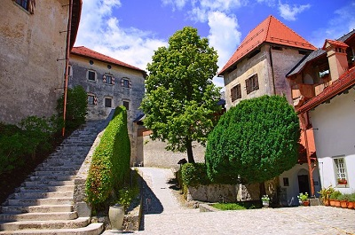
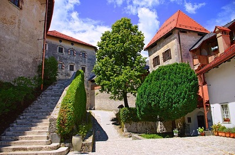

Kranj (pronounced [ˈkɾàːn] (About this soundlisten),
German: Krainburg[3]) is the fourth-largest city in Slovenia, with a population of 37,941 (2020). It is located approximately 20 kilometres (12 miles) northwest of Ljubljana. The centre of the City Municipality of Kranj and of the traditional region of Upper Carniola (northwestern Slovenia) is a mainly industrial city with significant electronics and rubber industries.
Kranj (pronounced [ˈkɾàːn] (About this soundlisten), German: Krainburg[3]) is the fourth-largest city in Slovenia, with a population of 37,941 (2020). It is located approximately 20 kilometres (12 miles) northwest of Ljubljana. The centre of the City Municipality of Kranj and of the traditional region of Upper Carniola (northwestern Slovenia) is a mainly industrial city with significant electronics and rubber industries.